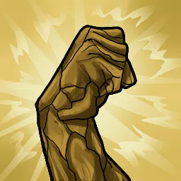

Résilience de la Terre
 Passif
Passif
Les Earthlains reçoivent un bonus de +1 à tous les jets de sauvegarde contre les effets qui infligerait une affliction.
« Les enfants des hommes transmettent une ancienne fable : "Le pouvoir des dieux sera accordé là-bas" ».
Les Earthlain sont une race extrêmement diverse, avec des individus de toutes tailles, forces et faiblesses différentes. Très adaptables, les Earthlains se trouvent presque partout sur le continent, allant des petites colonies aux côtés des Forestiers dans les canopées verdoyantes qui couvrent une grande partie du territoire aux grandes villes de Shaleshore et Hallaradh. Leur capacité à coopérer, leur soif insatiable de connaissance et leur ambition débordante les définissent. Même ces traits sont malléables, car certains trouvent satisfaction dans leur vie actuelle ou refusent de travailler avec les autres races - ou même entre eux.
Divers, mais moyens : L'apparence des Earthlains varie. Leurs cheveux peuvent être de n'importe quelle couleur, et leur taille varie de 140 cm à 190 cm en moyenne à l'âge adulte. Leur poids peut varier tout autant, et leur peau peut être de n'importe quelle couleur, d'un blanc pâle à un brun foncé. Les Earthlains atteignent l'âge adulte à 21 ans et peuvent vivre jusqu'à 90 ans.
 Traits raciaux
Traits raciaux
 Augmentation de caractéristique : +2 à un attribut et à son maximum, +1 à un autre attribut
Augmentation de caractéristique : +2 à un attribut et à son maximum, +1 à un autre attribut Compétences supplémentaires : Athlétisme, Médecine, une compétence supplémentaire de leur choix
Compétences supplémentaires : Athlétisme, Médecine, une compétence supplémentaire de leur choix Compétences d'Union : Brume Noire, Détermination Aptitudes raciales
Passif
Compétences d'Union : Brume Noire, Détermination Aptitudes raciales
Passif
Les Earthlains reçoivent un bonus de +1 à tous les jets de sauvegarde contre les effets qui infligerait une affliction.
Passif
La première fois qu'un Earthlain tombe à 0 points de vie chaque jour, il peut choisir de regagner 1 point de vie sans subir d’épuisement ; si l'Earthlain retombe à 0 points de vie, il subit immédiatement 1 échec de jet de sauvegarde contre la mort à la place. Ce statut peut être effacé en prenant un repos court ou long, ou en atteignant son maximum de points de vie.